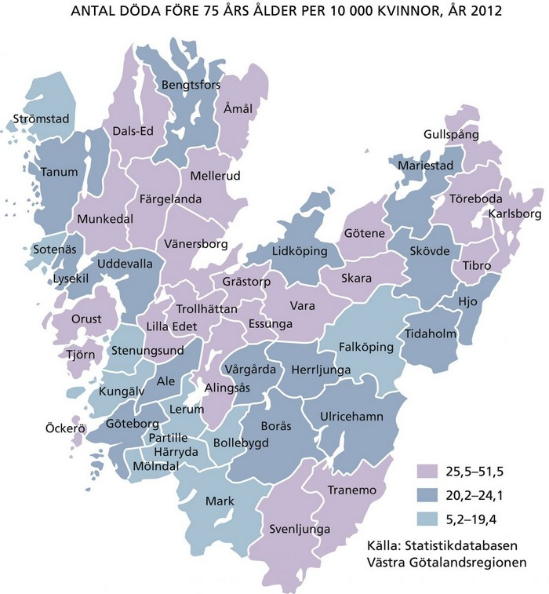
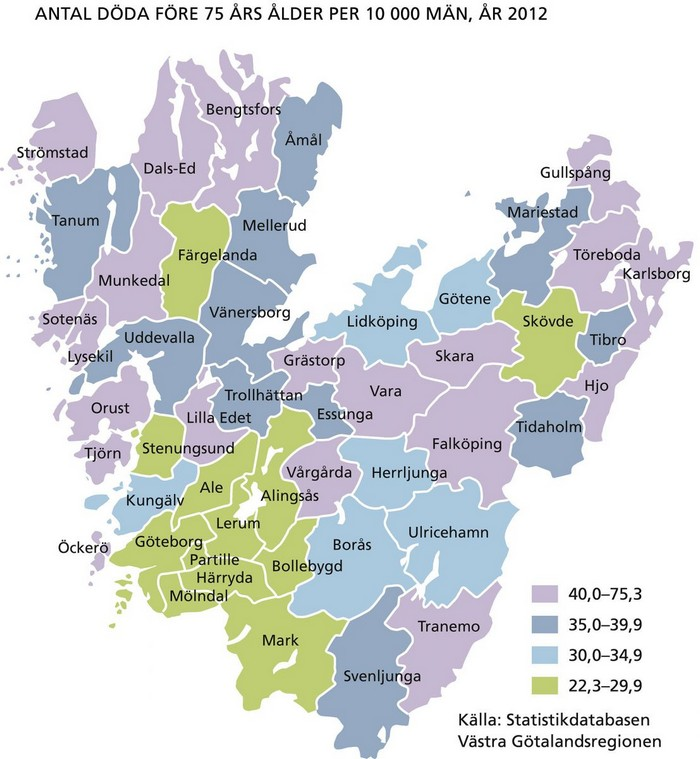
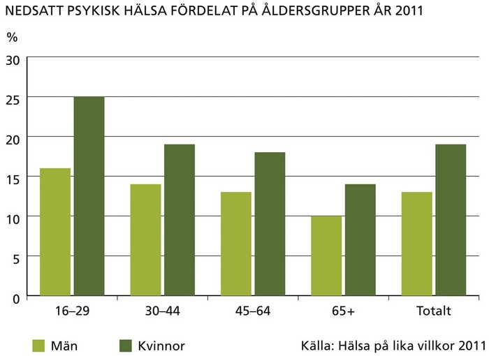
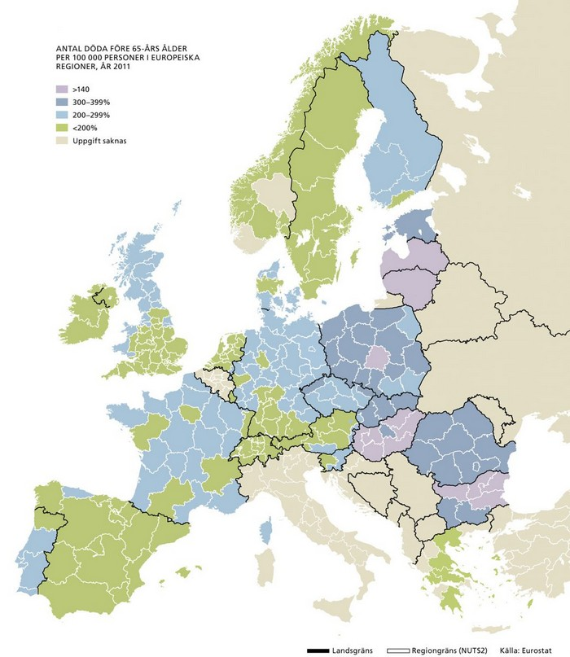
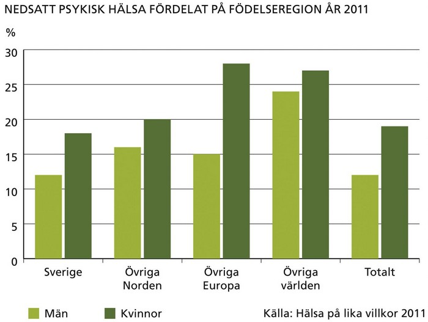
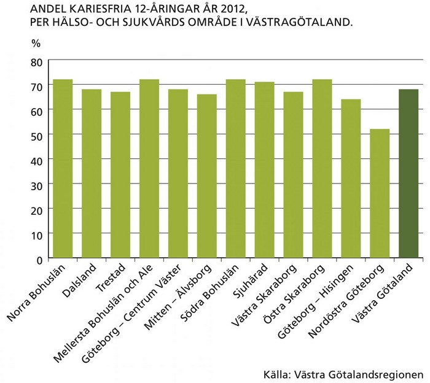

Medellivslängd: Hälsan allt bättre men ojämlikt fördelad
Befolkningens allmänna hälsotillstånd har blivit allt bättre under de senaste decennierna. Under den senaste femårsperioden har medellivslängden ökat med nästan ett år för både män och kvinnor. I Västra Götaland är den 83,4 år för kvinnor och 79,6 år för män. Det ligger nära riksgenomsnittet men varierar mellan olika kommuner.
Medellivslängden påverkas starkt av dödsfall som inträffar innan 75 års ålder. Även den förtida dödligheten varierar kraftigt mellan olika delar i länet, kommuner och stadsdelar.
Det finns också en stor variation mellan socioekonomiska grupper inom geografiska områden. Befolkningen med endast förgymnasial utbildning löper dubbelt så stor risk för att dö i förtid som befolkningsgrupper med universitetsutbildning.
Kartorna här nedan visar att den förtida dödligheten även varierar kraftigt mellan könen och mellan de olika kommunerna i Västra Götaland.
Vid en europeisk jämförelse är risken att dö i förtid (döda före 65 års ålder) lägre i Västra Götaland än i många andra regioner. Den genomsnittliga förtida dödligheten för EU-regionerna är betydligt högre (229 per 100 000 invånare) än motsvarande siffra för Västsverige (152 per 100 000 invånare). Kartan visar att de högsta värdena framför allt finns i de nya EU-länderna.


Självskattad hälsa: Ojämlik hälsa
De flesta invånare uppfattar sin hälsa som god. Tre av fyra män och en något mindre andel av kvinnorna uppfattade sin hälsa som god eller mycket god enligt den nationella folkhälsoenkäten ”Hälsa på lika villkor?” 2011. Variationen är stor mellan personer med kort respektive lång utbildning, personer med utländsk bakgrund respektive svensk bakgrund, mellan funktionshindrade och övriga, mellan personer med låg respektive hög inkomst.
Ett exempel på detta är att andelen individer med god eller mycket god hälsa är nästan två gånger så stor bland individer som inte har funktionshinder, än bland dem som rapporterar funktionshinder. Forskningen visar att funktionshindrades självskattade hälsa har ett samband med svårigheter att vara delaktig i samhällslivet, vilket i sin tur ofta är kopplat till bristande tillgänglighet.


Psykisk hälsa: Sämre psykisk hälsa bland yngre kvinnor
Psykisk ohälsa i form av bland annat stress, oro och ångest varierar starkt mellan kvinnor och män och olika åldersgrupper. Könsskillnaderna är påtagliga i de yngre åldersgrupperna, där kvinnor i betydligt högre grad än män rapporterar nedsatt psykisk hälsa. Bland kvinnor minskar andelen med psykisk ohälsa kraftigt med åldern, medan motsvarande minskning bland män är mindre uttalad.
En persons födelseregion har stor betydelse för den psykiska hälsan. Exempelvis är andelen kvinnor med nedsatt psykisk hälsa betydligt större bland kvinnor med utomnordisk bakgrund, än bland kvinnor med svensk bakgrund.

Tandhälsa: Ojämlikhet i tandhälsan
Tandvård är ett annat område där sambandet mellan hälsa och socioekonomi märks extra tydligt. Redan i unga åldrar är tandhälsan ojämnt fördelad mellan olika kommuner och områden. Andelen 12-åringar med kariesskadade tänder är betydligt större i Göteborg Nordost, ett ekonomiskt utsatt område med en högre andel utlandsfödda, än andra stadsdelar i Göteborg.

- Stäng meny
- Start
- Geografi och befolkning
- Den ekomoniska dimensionen
- Den sociala dimensionen
- Miljödimensionen
- Näringsliv
- Kompetens och kunskap
- Infrastruktur och kommunikationer
- Kultur
- Hälsa
 Medellivslängd: Hälsan allt bättre men ojämlikt fö
Medellivslängd: Hälsan allt bättre men ojämlikt fö- Självskattad hälsa: Ojämlik hälsa
- Psykisk hälsa: Sämre psykisk hälsa bland yngre kvi
- Tandhälsa: Ojämlikhet i tandhälsan
- Tabeller
- Diagram